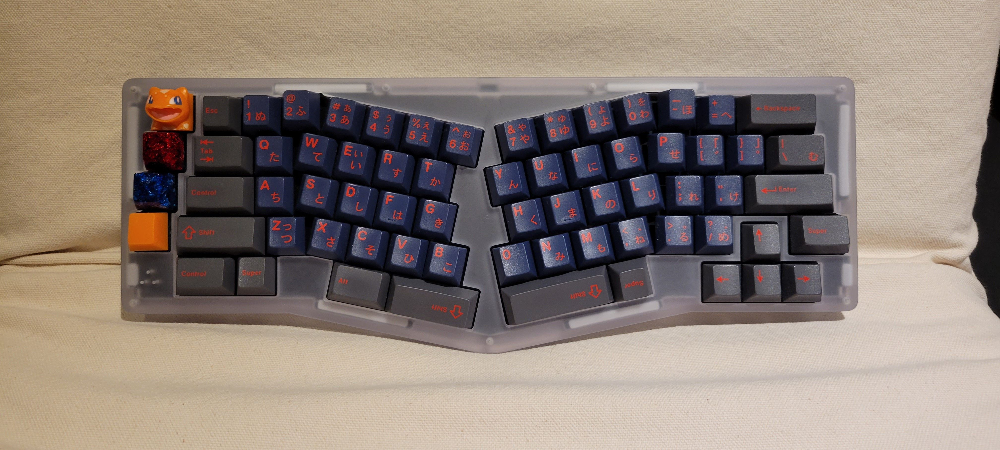
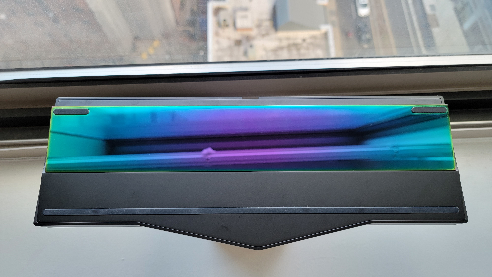
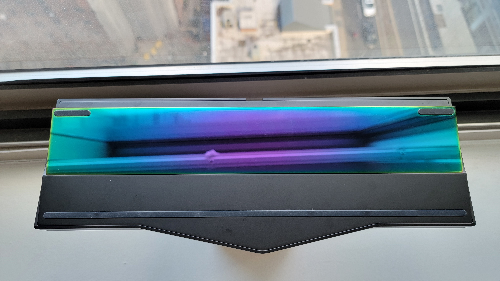
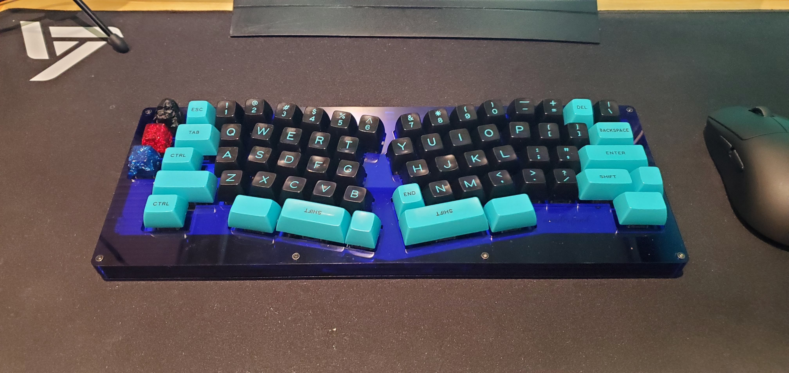
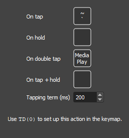

March 28, 2022
Contents
Introduction
This keyboard is somewhat of a controversial keyboard to me because of the design of the layout. I had bought the AVA (pictured below), a keyboard that Muji from Sneakbox designed in order to make a Alice-layout keyboard as symmetrical as possible. I cared very little for the symmetry, however I had bought into the group buy due to the replacement of the right shift by the arrow keys. The Owlab Spring has a nearly identical layout, and because Owlab is a more mainstream brand, it might push the AVA into irrelevancy. Nevertheless, I hope that the AVA and Spring can share space in the right-shift-less Arisu layout market as they are both pushing innovation in the right direction.
Interior
The Spring uses a leaf-spring mount, meaning the PCB and the plate are seated onto a leaf-spring (shown below). This allows for a lot of flex (also described as give) when you press down on the switches, in comparison to more popular methods like top mount, where the pressing can feel especially stiff due to the plate being secured by screws. Although noticeable, the flex is not so much to the point where it disturbs your typing experience. That will likely change more depending on what plate you decide to go with. I decided to go with an FR4 plate, which is a material more flexible than Aluminum, but less than PC (Polycarbonate).
In comparison to gasket mounting, which essentially sandwiches the plate in between the top and bottom casing with a dampener like Poron foam, leaf-spring mounting definitely allows for more flex. Outside of the mounting style though, I find that the plate actually affects the flex/give more than the mounting style does. Using a POM plate in a gasket-mount keyboard feels just as flexible if not more than using FR4 in this leaf-spring mounted keyboard.
The assembly of this keyboard is on the more difficult side due to the leaf springs. The small prongs point out have to be covered by these rubber o-rings after mounting the plate and PCB, which can be a little tricky when putting the assembly together. However with Owlab’s build guide, it was a fine experience and I had no trouble during the building process.
Exterior
I decided to go with the Black Chroma color, but Owlab had offered a variety of different colors from blue, purple, red, silver, etc. The quality of the case is superb. The back weight is stunning, and the case as a whole has a very nice heft to it, weighing in at around 5 & 1/2 pounds. The corners are beveled, but not completely rounded in order to give the case a little edge. The cable port is sunken into the case, which allows for the connector to be completely hidden from view. The top portion of the case hangs over the bottom weight, which is a design that isn’t new, but is still aesthetic. Because of this, no seams between the case are visible from the top, but from the side, you can see the top casing covering the bottom. This isn’t done in any manner that makes it look bad, but just something to note. The LED strip on the bottom left is programmable through VIAL or VIA software, and is a nice touch. This is a good looking case.
 

Sound/Feel
Normally here, I’d describe how the switches sound in the specific configuration, however Owlab keyboards are most famous for the use of PE foam. This foam sits in between the switches and the PCB, creating a “marbly” and “poppy” sound that is difficult to replicate with just switches alone. The bright side of this is that it can elevate the sound of a keyboard, but on the contrary makes every keyboard using this foam sound relatively similar.
For the linear build, I decided to use Creamsicle switches. Creamsicles are a linear Frankenswitch that takes a POM long-pole stem and puts it into the housing of a JWK linear switch. Traditionally, this is done with a NK Cream stem and a C3 Tangerine housing (which uses UHMWPE, a plastic with an insanely low coefficient of friction). I figured that the Original Aspirations, which are also a JWK linear but with a different plastic mix, would be good enough as a housing replacement.
One specific thing to note about these switches are because the stem does have a longer pole, there is reduced travel in comparison to regular switches. This might bother some people, however I find it refreshing from using traditional linears.
For a tactile build, I decided to go with Pewter switches. After trying out broken-in MX Browns, I had wanted to see what a light tactile from JWK would feel like. I love light tactiles, and these definitely did not disappoint. They’re smoother than a lot of tactiles I’ve tried in the past, however still have a little bit of texture to the press that makes it enjoyable to type on. It is almost exactly as they described, a linear with a little rumble. But I did have trouble with these switches as well, lubing and filming these were not a fun experience. There was a lot of leaf ping here as well, so I needed to add lube on the leaf where the stem legs came into contact with it. This did remove some tactility, however it completely removed the leaf ping and made this switch a very solid light tactile.
Layout
I love the Alice layout, however the removal of arrow keys had made me stray away from using my previously built Lubrigante (pictured below). This new layout that replaces the right-shift was a dream come true. I don’t use right-shift, so replacing that unused space with arrow keys is a game changer. In addition to the macro cluster on the left and the ergo layout, this right-shift-less Alice layout quickly became my new favorite. It’s comfortable to type on for long periods of time, and gaming with it is no different. Although the width of the keyboard is similar to that of a regular TKL, the keys themselves are more centralized, allowing for more mouse space.
I should also note that VIAL, the program Owlab recommends to use to configure the layout of the Spring, also allows for an interesting way to program a macro called Tap Dance. Essentially, you can program a key to have multiple functions depending on the input. This way, people who desperately need right-shift could make it so that on hold, the up arrow becomes a right-shift, and on tap, it’s just a regular up arrow. I have it so my tilde, PageUp, and PageDown are all media controls on double tap. This is extremely handy and removes some need for a Fn layer, although a Fn key will still be needed in other cases.
Closing
The Owlab Spring is an excellent keyboard that many could consider their endgame. The leaf-spring mounting, although not new, is something that I would like to see more popularized in the more regular-layout keyboards in contrast to the over-saturated gasket-mount. The overall sound with the PE foam is almost exactly how one would predict a keyboard with PE foam to sound, but is still pleasing to the ears. The biggest factor one should consider before getting something like this is whether or not they like the layout. I imagine it would be difficult to get used to something like this for any right-shift user, but for someone like myself, this is perfect.
Thanks for reading,
Justin